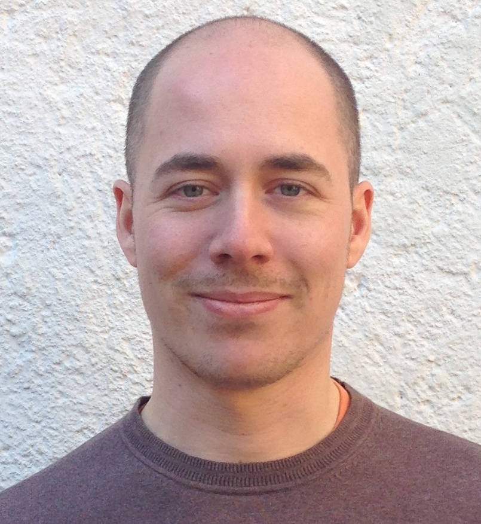

My name is Andrea Caracciolo.
I am a software engineer with academic experience.
In the recent past, I developed tools and techniques for assessing the quality of a software system with regards to its specification.
I'm highly interested in architectural design, software analysis and testing.
- email: aef.caracciolo at gmail.com
- phone +41 78 669 30 12
- skype: aef.caracciolo
Projects
Dictō + Probō
Dictō is a language that aims at supporting software architects in formalizing and testing prescriptive assertions on functional and non-functional aspects of a software system. Instead of dealing with multiple tool-specific formalisms, one can define several types of architectural constraints using one uniform, highly-readable, formal language. Rules can be automatically evaluated using Probō, which integrates widely-adopted off-the-shelf analysis tools. Our technique has been successfully integrated with SonarQube, Jenkins (live installation) and Teamcity (live installation).- Dictō website: Catalog of supported rules and user manual.
- Preliminary study: An empirical analysis on the adoption of conformance checking solution in industrial organizations.
- Industrial validation: The approach has been validated in the context of several industrial projects.
Marea
Marea is a tool that suggests optimal refactoring strategies for removing dependency cycles at package-level. This is done by simulating different evolutionary scenarios and evaluating their cost-effectiveness using a purpose-designed profit function.- Publication: An exhaustive description of the technique.
Pangea
Pangea is a workbench that eases multi-language static analysis of software corpora by providing a repository of language-independent object model snapshots. Arbitrary complex structural analysis scripts can be run in batch on a large number of open source systems.- Pangea website: Short introduction, tutorial and sample analyses.
Publications
Online profiles: Google Scholar, dblp
2016
- . Automated Conformance Monitoring: Exploring the Path to Industrial Adoption. submitted for review. PDF →
- . Marea: a Semi-automatic Decision Support System for Breaking Dependency Cycles. to appear. PDF →
- . Evaluating an Architecture Conformance Monitoring Solution. submitted for review. PDF →
2015
- . A Unified Approach to Automatic Testing of Architectural Constraints. In Software Engineering (ICSE), 2015 IEEE/ACM 37th IEEE International Conference on, 2 p. 871-874, ACM Press, 2015. DOI PDF →
- . A Unified Approach to Architecture Conformance Checking. In Proceedings of the 12th Working IEEE/IFIP Conference on Software Architecture (WICSA), p. 41-50, ACM Press, May 2015. DOI PDF →
- . On the Evaluation of a DSL for Architectural Consistency Checking. In Extended Abstracts of the Eighth Seminar on Advanced Techniques and Tools for Software Evolution (SATToSE 2015), p. 55—57, July 2015. PDF →
- . Polymorphism in the Spotlight: Studying its Prevalence in Java and Smalltalk. In Proceedings of the 2015 IEEE 23rd International Conference on Program Comprehension, p. 186—195, IEEE Press, 2015. Published. DOI PDF →
2014
- . How Do Software Architects Specify and Validate Quality Requirements?. In European Conference on Software Architecture (ECSA), Lecture Notes in Computer Science 8627 p. 374—389, Springer Berlin Heidelberg, August 2014. DOI PDF →
- . Dicto: A Unified DSL for Testing Architectural Rules. In Proceedings of the 2014 European Conference on Software Architecture Workshops, ECSAW '14 p. 21:1—21:4, ACM, New York, NY, USA, 2014. DOI PDF →
- . Pangea: A Workbench for Statically Analyzing Multi-Language Software Corpora. In Source Code Analysis and Manipulation (SCAM), 2014 IEEE 14th International Working Conference on, p. 71—76, IEEE, September 2014. DOI PDF →
- . Dicto: Keeping Software Architecture Under Control. In ERCIM News 99, October 2014. URL →
Teaching
Taught lectures and labs:
- 2014, 2015: Software Architecture lecture for the Software Engineering course at the University of Bern, Switzerland (time: 2h / year).
- 2014: Software Architecture Recovery lecture for the Software Design and Evolution course at the University of Bern, Switzerland (time: 2h).
- 2013, 2014, 2015: Teaching assistant for the Software Engineering course at University of Bern (time: 14 hours / year).
- . Continuous Integration with Architectural Invariants — A case study about architectural monitoring in practice. Masters thesis, University of Bern, December 2015. PDF →
- . Marea — A Tool for Breaking Dependency Cycles Between Packages. Masters thesis, University of Bern, January 2015. PDF →
- . Dicto Auto-Complete Engine. Bachelor's thesis, University of Bern, N/A 2016.
- . HIKOMSYS: How I KnOw My SYStem — Learning About Java Dependencies Through Gamification. Bachelor's thesis, University of Bern, July 2015. PDF →